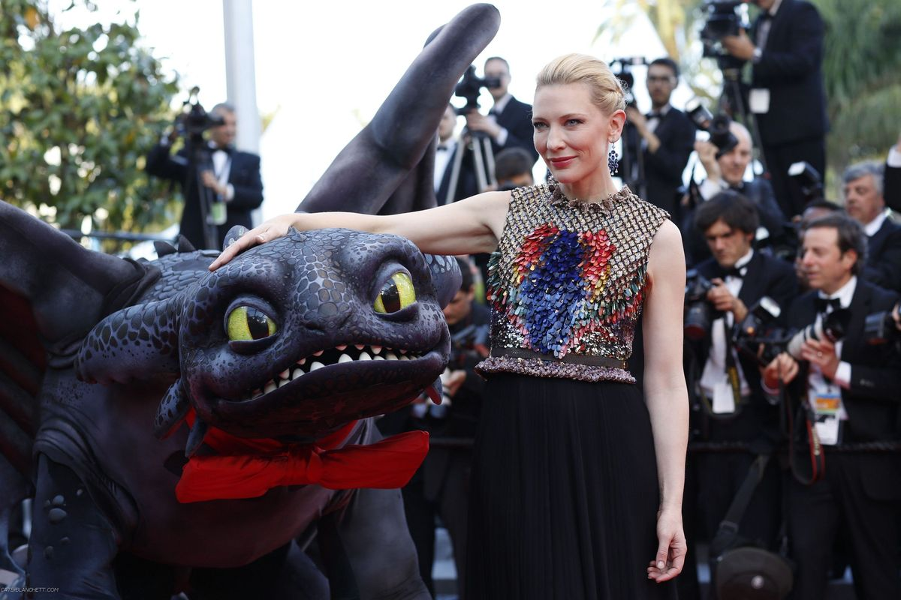

HOW TO TRAIN YOUR DRAGON 2 (LIVE-ACTION)
Tras su exitosa participación en la saga animada de How to Train Your Dragon, donde dio voz a Valka, la madre de Hiccup, medios internacionales especulan que Cate Blanchett podría incorporarse también al live-action en desarrollo.
Aunque el estudio no ha confirmado su participación, la posibilidad de ver a Blanchett reinterpretar a Valka en carne y hueso ha emocionado a los seguidores.
El live-action de la primera entrega está en marcha con estreno programado para 2025, y se espera que la secuela pueda dar pie a la participación de Cate.
